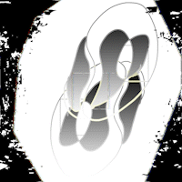
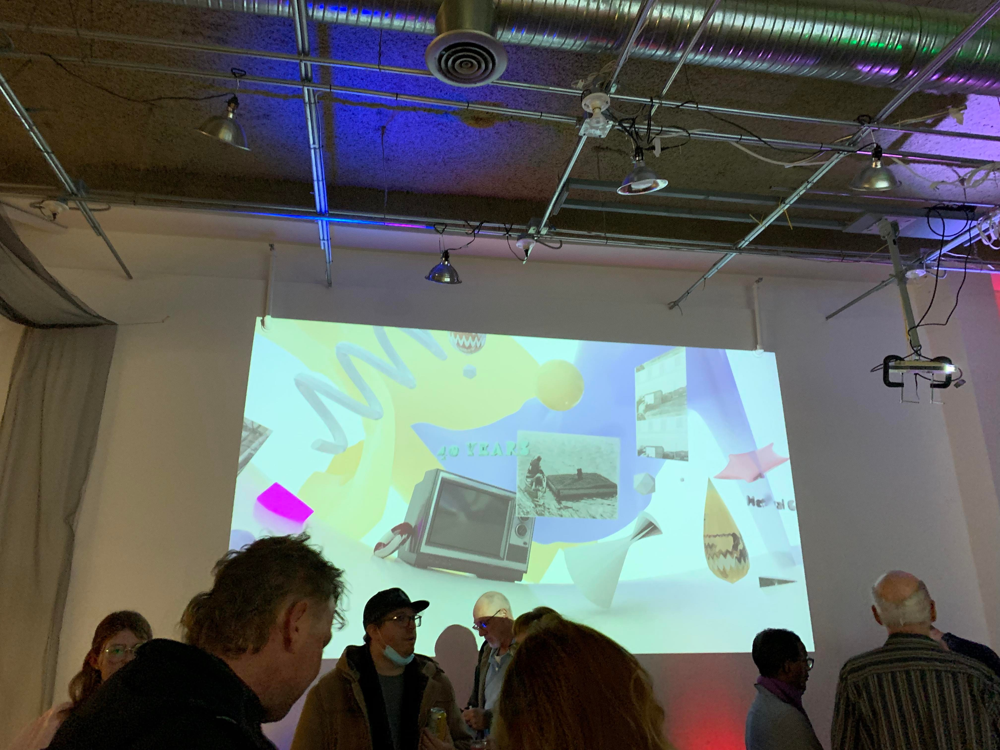
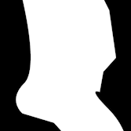

Cyril Chen - Artist/Researcher 
EDUCATION
- PhD Student - Communications, New Media and Cultural Studies - McMaster University:
Working on an experimental XR game
- Honours Bachelor of Animation - Sheridan College
residencies + fellowships
- XR IBPOC Fellow, Single Thread Theatre Co. for PXR Conference, Toronto ON, Fall 2024
- Capacitor // University of Saskatchewan Art Galleries and Collections / Funded through the Canada Council for the Arts Digital Now Program / 6-month remote residency / August 2022 - January 2023
- Foundational mentorship CARFAC Saskatchewan / mentor Frans Lotz, metal & wood sculpting / Regina, SK // September 2022 - June 2023
- Digital Prototyper Residency @ MIGRATION // UKAI Projects // https://whoisasey.github.io/musicpicnic// // https://www.instagram.com/p/CCtPTG0AIc_/ https://www.ukai.ca/eventsandworkshops/migration - 2020
Funding
-Internal Graduate Scholarship, Department of Communications and New Media, McMaster University | 2026 - 2029
-Ontario Graduate Scholarship | 2025 - 2026
-ad-hoc collaboration microgrant | Saskarts | microgrant awarded for multimedia group arts event held in partnership with Neutral Ground Artist-Run Centre and Saskfilmpool,
co-led by Cyril W. Chen and Nicole Mae, with artistic collaborators Joviel Buenavente, Greta Peart and Gabriel Coloma | August 2024
-Concept to Realization - Explore and Create Program | Canada Council for the Arts | New/Early Career Media Artist grant | 2023-2024
teaching experience
Introduction to Media Arts, MEDIART 1A03, McMaster Univeristy, Teasching Assistant for Communications and New Media Department, Fall 2025
Drawn-on-film animation - Workshop fascilitator - Saskfilmpool YFAIR - Summer 2024
Introduction to Communications Theory and Methods - Teaching Assitant - McMaster University - Winter 2024
Foundations of Communications Theory and Methods - Teaching Assitant - McMaster University - Fall 2023
Digital 2D animation - remote instruction and q&a session - Saskatcheawn Filmpool - Youth Filmpool Artists in Residence -YFAIR - August 18, 2023
ANIMATION: From Paper to Digital - inperson 2-part workshop - Saskatchewan Filmpool - June 10-11, 2023
Wear your art: Visual Storytelling Bandanas - inperson and hybrid workshop - Dunlop Art Gallery - June 6, 2023
2D animation with Blender - online workshop via Zoom - Dunlop Art Gallery - https://www.instagram.com/p/CaScRHXODCF/ - https://www.facebook.com/events/393236002564884/ - February 2022
Provincial ArtCade Program - digital workshop artist / visiting artist - Mackenzie Art Gallery - February 2020 - 2021
Experimental Animation workshop: Animating with Mixed Media - Mackenzie Art Gallery - March 21 & 29, 2021
Gone in a Flash Livestream Series - Saving Your Flash Art from the Grave - Mackenzie Art Gallery & Neutral Ground Artist Run Centre - Flash Archiving Workshop using Conifer
-https://mackenzie.art/event/gone-in-a-flash-workshop-saving-your-flash-art-from-the-grave/ - https://www.youtube.com/watch?v=YQ3o6iGLcrs&t=1s - https://mackenzie.art/gone-in-a-flash/ -
https://docs.google.com/document/d/1EhGXpZUi7RhRFqSXP354X2UG1enuEBIY7RobnZdB37c/edit -Regina SK / Dec 10, 2020
Professional Experience
- Network Convener: Communications & Projects // STOPS to Violence Saskatchewan / remote, Canada / August 2023 - Oct 2023
- Workshop instructor, Panelist // Mackenzie Art Gallery, Dunlop Art Gallery, Halifax Independent Animation Festival // remote, Canada // started Nov 28, 2020
- Freelance animation artist // clients: CBC Creator Network, Hi-Vis film, Adrian Dean Animation, Neutral Ground Artist-Run Centre // Remote, Canada // started Nov 15, 2019
- Interim Communications & Member Services Coordinator // Saskatchewan Filmpool // Regina, SK // 2020
- Gallery & Archive Assistant // Neutral Ground Artist Run Centre // Regina, SK // 2020 & 2021
- Junior Communications Consultant // Government of Saskatchewan, Ministry of Government Relations // Regina, SK // summer internships 2017 & 2019
short film, short doc, feature-length, TV:
- Transfusion// short animated film // QCC, BQFF, SIFA, Homegrown, UWpg, 2023-2024 |
Bradford Queer Film Festival | Bradford, UK | November 2023 | Screening with select animator Q&A |https://issuu.com/castlesinthesky/docs/bqff_2023_programme
| Microbeaf experimental animation festival | May 18, 2023 | screening and interview for animated short |https://thebeaf.org/ |
- Home of Diaspora // Concept & Storyboards, co-animator // CBC Creators Network, SK // 2021 - 2022
- Queens of the Qing Dynasty // Original 2D Animation // live-action Canadian feature Dir. by Ashley McKenzie // Nova Scotia // 2021-2022 [72nd Berlinale, TIFF 2022, Atlantic Independent Film Festival 2022, New York Film Festival 2022]
| https://www.berlinale.de/en/news-topics/news/detail_122377.html | https://www.instagram.com/p/CY6bKUwLaxw/
- 拜山 ( baai3 saan1) // super 8 film, independent // 2021 [One Take Super 8, REGINA 2022] // https://www.youtube.com/watch?v=wvucgixW0lI
- Why Am I? // Background layout & paint artist // Children's mini TV series on CityTV // Regina, SK // 2021
- Mom's Garden 妈妈的菜园 // student independent multimedia short // University of Regina & NSCAD University, SK // 2019 [Addis Video Art Festival (Ethiopia, 2022),
WNDX Festival of Moving Image 2022, Halifax Independent Animation Festival 2021, University of Regina 2019] Animation Festival of Halifax | Select artist for Vegan Delights | Halifax, NS / May 8, 2021
- Hood Habits // student group film for Charles Taylor Theatre // NSCAD University, NS // 2019 [Global News, Emerging Lens Cultural Film Festival 2019]
screenings
Lunenburg Doc Festival - CBC Shorts: In Search of Ourselves - RAW - Animation Director - http://lunenburgdocfest.com/film/standing-up-short-docs-by-indigenous-filmmakers/?fbclid=IwAR3KFke3kc14wC8vZCNn4DpCXE0J02SWhBya-nIpM_nEOKKLVxWwQXrsNmE
https://watch.eventive.org/lunenburgdocfest/play/5f5e8ac8f2e588005383eb1c/5f56982eb6231b00299f5a2f?fbclid=IwAR3Ih3N0KRBw0qniMl6HlE49jOhqvLzP5fuPYkt9CnLrT9DF1mrQTDf0UBU - Lunenburg NS - September 24-30, 2020
Emerging Lens Cultural Film Festival - Hood Habits Animated, special premiere - Co-Director and Animator
https://nsadvocate.org/2019/04/21/news-release-its-happening-the-9th-annual-emerging-lens-cultural-film-festival-april-24-25-26-27-and-the-28th-in-truro-and-new-glasgow/
https://globalnews.ca/video/5180342/emerging-lens-cultural-film-festival-3 - https://www.theemerginglens.com/ - Halifax NS - April 24-28, 2019
EXHIBITIONS

Spring Glitch: A PAVED Arts Fundraiser Party- VJ/ 2D experimental animator - Regina, SK - May 4, 2024 -https://www.pavedarts.ca/spring-glitch/ -https://www.instagram.com/pavedarts/reel/C6Zoda-pQvJ/
Our Lives in the Toxic Blume (olittb) - Class digital art exhibition - Factory Media Lab / McMaster University - Hamilton ON - 2023 - https://www.factorymediacentre.ca/thing-k-power-exhibition/ - https://www.youtube.com/watch?v=EHFSpS6jHGo
Neutral Ground 40th anniversary party archival animation - Animation Projection - Neutral Ground Artist-Run Centre, Regina SK, November 19, 2022
AR Animation Artist - Toronto Junction BIA - First Annual Winter Wonderland Window Exhibit - https://totimes.ca/window-art-comes-to-life-right-before-your-eyes/?fbclid=IwAR2m3DsI_9Xk6ws6pjIlHJ2_cNaOo39pNLiwg01AX_AKmGLa76LBijnY4xo
https://www.narcity.com/en-ca/things-to-do/toronto/torontos-first-alternate-reality-exhibition-has-hit-the-junction-its-so-magical - - Toronto, ON - Nov 2020
Thoughts of a Digital Archivist - Window Gallery - Neutral Ground Artist Run Centre - https://www.neutralground.sk.ca/?page=eventdetail&year=2020&id=202091020000157
https://www.gallerieswest.ca/events/clara-chen-thoughts-of-a-digital-archivist/ - Sep-Oct 2020
Back alley art pops up in downtown Regina - CTV Regina - https://regina.ctvnews.ca/back-alley-art-pops-up-in-downtown-regina-1.5074770 - Regina, SK - 2020
{ PostModern Bazaar - Alley Door Mural Artist - Regina Downtown BID - https://reginadowntown.ca/alley-door-art-artists-2020/ - 2020 }
Nocturne 2019 - illustration and prose - A Soft Place - NSCAD Queer Collective - NSCAD Library Windows - 5163 Duke Street - https://www.instagram.com/p/B4AUumMnyG7/ - Halifax NS - Oct 24 2019
Mom's Garden - Plants in Contemporary Art (group show) - University of Regina Faculty of Media, Art and Performance - https://vimeo.com/343377845 - 2019
Anination: Animation Nation - Expanded Media Showcase (group show) - https://www.youtube.com/watch?v=HLPH69gkiUo&feature=emb_logo - NSCAD Film Academy - Halifax NS - 2019
唐人! - Printmaking Showcase (group show) - NSCAD Port Campus - Halifax NS - 2018 // Living Skies - Alley Door Mural Artist - RDBID - https://reginadowntown.ca/alleydoorart/ - Regina SK - 2018
The Bus Ride - GBDA Digital Art Showcase - UWaterloo Stratford Campus - https://uwaterloo.ca/stratford-school-of-interaction-design-and-business/events/2017-project-showcase-and-reception
https://www.instagram.com/p/BgZ_A76l-Jk/ - digital illustration for Karin Schmidlin @ University of Waterloo Stratford Campus - Stratford ON - 2017//
Mosaic City - Traffic Box Digital Mural Artist - RDBID - https://reginadowntown.ca/trafficboxart/ Regina SK - 2017//
Don't Trust a Skinny Chef - Painting - German Expressionists and their Contemporaries - Dunlop Art Gallery & Regina Central Library - Regina SK - 2017
panels, conferences
Transing the Narrative: Positing/Digesting Grief for Equitable+Dialogic Frameworks & cCM: Artistic Interventions for Creative Climate Models | IS|CS 2024 @TMU/York, September 14, 2024
Exploring Difficult Subjects in Comics, World Balloon Fair | Toronto Comic Arts Festival | May 10, 2024
Animation Festival of Halifax | Select artist for Big Picture Panel: Recipes for Community in a time of Disaster | Halifax, NS / May 8, 2021
Films: RAW (CBC, 2020) - https://afx.eventive.org/schedule/6088cb601ccf790075af339e
Digging Through SOIL - online gathering & artist discussion on the end of flash media- Neutral Ground Artist-Run Centre & Mackenzie Art Gallery - Gone in a Flash Series - https://neutralground.sk.ca/?page=eventdetail&year=2020&id=2020121120225112 - https://www.facebook.com/events/1388545388210568/ - Regina, SK / Dec 19, 2020
Gone in a Flash Livestream Series - Panel Discussion with Dragan Espenscheid, Jonas Richner and Cyril Chen - Mackenzie Art Gallery & Neutral Ground Artist Run Centre - https://mackenzie.art/event/gone-in-a-flash-panel-discussion/ - https://www.youtube.com/watch?v=eVYwhtJyx9Y - Regina SK / Nov 28, 2020
PUBLICATIONS
Transmuted - short poem, “genderfree” - Issue 10 - https://www.transmuted.co.uk/product-page/issue-10-preorder - UK - 2024
Burning Magazine - illustration - Winter 2021 Issue - "SOCIAL PHOBIA" - https://www.burningmagazine.com/issue-no-2/ - Halifax NS - 2021
On International Transgender Day of Visibility, artist Cyril Chen explores Happiness - CBC Nova Scotia | First Person - comic and written piece - https://www.cbc.ca/news/canada/nova-scotia/happy-place-cyril-chen-1.5971050?utm_campaign=likeshopme&utm_medium=instagram&utm_source=dash%20hudson&utm_content=www.instagram.com/p/CNGISrYH7x8/ - Halifax, Nova Scotia / March 31, 2021
RIP Adobe Flash: Five Takeaways About the Plug-In's Legacy in Net Art - HYPERALLERGIC - by Rea McNamara - https://hyperallergic.com/609682/rip-adobe-flash-five-takeaways-about-the-plug-ins-legacy-in-net-art/ - Brooklyn NY / Dec 18, 2020
Raw Talent: How this spoken word video came to be - Featured Artist - CBC Nova Scotia - https://www.cbc.ca/news/canada/nova-scotia/community/raw-talent-how-this-spoken-word-video-came-to-be-1.5479690?fbclid=IwAR1k3j0NRObi-bqo5x9v3EXPAF9zo-MG3oRt7Q0S-4s3znb1y-gWY9eeF2w - NS, CAN - 2020
Raw: A spoken word piece that speaks to being true to yourself - Animator and Co-Director - CBC Creator Network - https://www.cbc.ca/news/canada/nova-scotia/raw-spoken-word-nova-scotia-1.5473945?utm_campaign=likeshopme&utm_medium=instagram&utm_source=dash%20hudson&utm_content=www.instagram.com/p/B8_Y1zPHOVL/ - NS, CAN - 2020
Burning Magazine - illustration - November Issue - "WANTING TO POSSESS A CANDLE FLAME WHEN U HAVE THE SUN" - https://expozine.ca/en/fair/fair-2020/ - https://issuu.com/burningmagazine/docs/b_u_r_n_i_n_g_no_1_layout_zine_spreads - https://www.instagram.com/p/B4cngJChF8v/ - Halifax NS - 2019
Canadian Youth occupy MP Offices across the country calling for climate action - Canada's National Observer - Photographer - https://www.nationalobserver.com/2018/11/30/news/canadian-youth-occupy-mp-offices-across-country-calling-climate-action - Halifax NS - November 30, 2018
CONTESTS
Project: Better - QHacks Best Design Award - UX/UI Designer - Queen's University - https://devpost.com/software/better - https://twitter.com/AutocodeHQ/status/960172056959766529 - Kingston, ON - 2018
Stratford Campus UXPerience Design Camp - Project: Beyond Innovation - University of Waterloo - https://docs.google.com/presentation/d/1gduKB1tD_K9hkNHiIrF0siZfy2Gp2t9mm2g-C3Y7TGk/edit#slide=id.gd9c453428_0_16 - https://www.youtube.com/watch?v=3I5U2_mcjrg - Stratford, ON - 2016
JURIES
Canada Council for the Arts - paid jury member for Research-Creation grant program, New and Emerging Artists - remote, Canada, 2024
Nuit Blanche Regina - volunteer jury member for 2021 Nuit Blanche installations - https://nuitblancheregina.ca/- Regina, SK
Neutral Ground Artist-Run Centre - paid jury member for 2022 - 2024 exhibition programming (window and main gallery) | Regina, SK
,-,-. ,-,-. ,-,-. ,-,-. ,-,-. ,-,-. ,-,-. ,-,-.
.( +.\ / (_o \ /.( +.\ / (_o \ /.( +.\ / (_o \ /.( +.\ / (_o \
\ {. */ \ o ) / \ {. */ \ o ) / \ {. */ \ o ) / \ {. */ \ o ) /
`-`-' `-'-' `-`-' `-'-' `-`-' `-'-' `-`-' `-'-'
